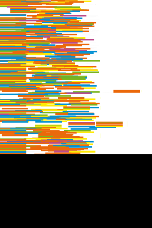
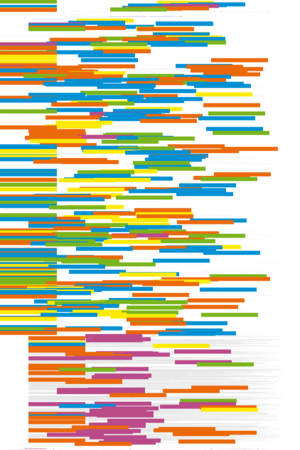

| About IR |
| Editors |
| Author instructions |
| Copyright |
| Author index |
| Subject index |
| Search |
| Reviews |
| Weblog |
| Register |
| Home |
Volume 11 No 3 April, 2006
Pedro Antunes, Carlos J. Costa & José A. Pino
The use of genre analysis in the design of electronic meeting systems
Lina Markauskaite
Towards an integrated analytical framework of information and communications technology literacy: from intended to implemented and achieved dimensions.
C.M. Tilley, C.S. Bruce, G. Hallam and A.P. Hills
A model for the development of virtual communities for people with long-term, severe physical disabilities
Kalyani Ankem
Use of information sources by cancer patients: results of a systematic review of the research literature
Elena Macevičiūtė
Information needs research in Russia and Lithuania, 1965-2003
Terrence A. Brooks
No bad web pages: reader empowerment and the Web
Víctor Herrero-Solana & Yusef Hassan
 Metodologías para el desarrollo de Interfaces Visuales de Recuperación de Información: análisis y comparación
Metodologías para el desarrollo de Interfaces Visuales de Recuperación de Información: análisis y comparación
An Nguyen & Mark Western
 The complementary relationship between the Internet and traditional mass media: the case of online news and information.
The complementary relationship between the Internet and traditional mass media: the case of online news and information.
 Case studies in open access publishing. Number one.
Case studies in open access publishing. Number one.
Bo-Christer Björk and ZigaTurk
The Electronic Journal of Information Technology in Construction (ITcon): an open access journal using an un-paid, volunteer-based organization.
Tom Wilson & Elena Macevičiūtė
Conference report: Third Nordic Conference on Scholarly Communication, Lund 24-25 April, 2006
Resúmenes en Español
Watch this: Greasemonkey the Web — one of a series of occasional columns by Terrence A. Brooks of the Information School, University of Washington, USA.
Call for papers: Activity Theory and Information Studies
Reviews
Alaszewski, Andy. Using diaries for social research. London: Sage Publications, 2006.
Cronin, Blaise, (Ed.). Annual review of information science and technology. Volume 40. 2006. Medford, NJ: Information Today, Inc. on behalf of ASIS&T, 2006.
Cronin, Blaise. The hand of science: academic writing and its rewards. Lanham, MD: The Scarecrow Press, Inc., 2005.
Engeström, Y., Miettinen, R. & Punamäki, R-L. (Eds.) Perspectives in activity theory. Cambridge: Cambridge University Press, 1999.
Fisher, Karen E., Erdelez, Sandra, and McKechnie, Lynne E.F. Theories of information behavior. Medford, NJ: Information Today, Inc. 2005.
Hock, Randolph. Yahoo! to the max: an extreme searcher guide. Medford, NJ: Information Today, Inc., 2005.
Kling, R., Rosenbaum, H. & Sawyer, S. Understanding and communicating social informatics: a framework for studying and teaching the human contexts of information and communication technologies. Medford, NJ: Information Today, Inc., 2005.
MacDonald, Matthew. Creating Web sites: the missing manual. Sebastopol, CA: Pogue Press/O'Reilly, 2006.
Pálsdóttir, Ágústa. Health and lifestyle: Icelanders' everyday life information behaviour. Åbo (Turku), Finland: Åbo Akademi University Press, 2005.
Spink, Amanda and Cole, Charles (Eds.) New directions in cognitive information retrieval. Dordrecht; London: Springer. 2005.
Tidwell, Jenifer. Designing interfaces. Sebastopol, CA: O'Reilly, 2006.
Williams, R.V. and Lipetz, B-A. (Eds.) Covert and overt: recollecting and connecting intelligence service and information science. Medford, NJ; Lanham, MD: Information Today Inc., and Scarecrow Press, Inc., on behalf of ASIS&T, 2005.
What's in the open access e-journals?
Conference announcements
A message to Conference organizers.
Information Seeking in Context - ISIC 2006, University of Technology, Sydney, New South Wales, Australia, 19-21 July, 2006
Information, Communication, Society. 10th Anniversary International Symposium, University of York, 20th-22nd September 2006
First International Symposium on Information Interaction in Context (IIiX) 18-20 October, 2006, Copenhagen, Denmark
International Conference on Digital Libraries, 5-8 December, 2006, New Delhi, India
Call for Chapters for a new book on Communities of Practice in Education
Check the other resources available at InformationR.net - free resources for information researchers. If you find Information Research useful please sign in and we'll notify you of future issues.
Contribute ideas and links to relevant resources on the Weblog. Join at
http://www.free-conversant.com/irweblog/
Information Research: an international electronic journal, is published four times a year by Professor Tom Wilson with technical support from Lund University, Sweden and editorial support from the Swedish School of Librarianship and Information Science, Högskolan in Borås.
| ||||
 |
|
Web Counter |
||